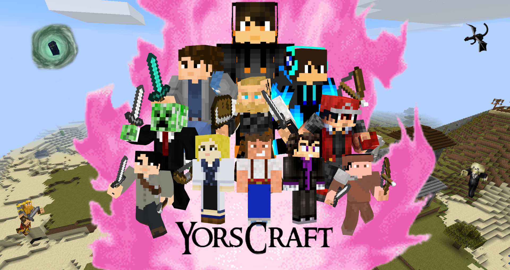
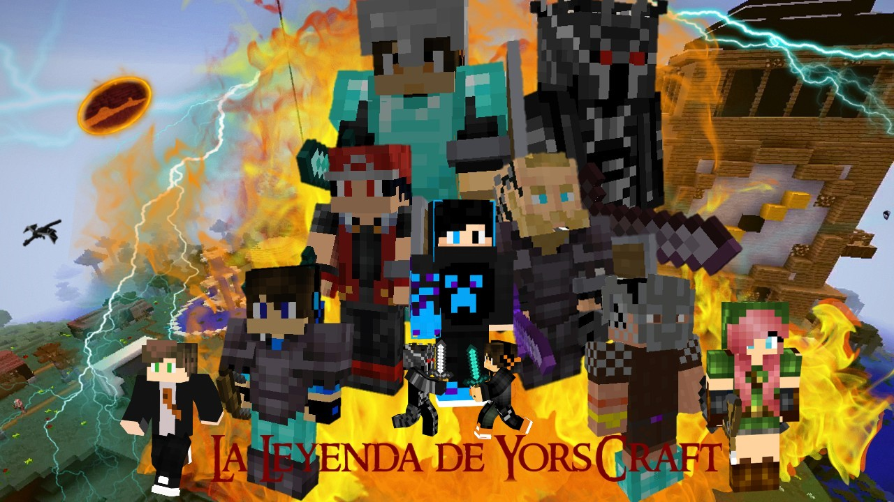
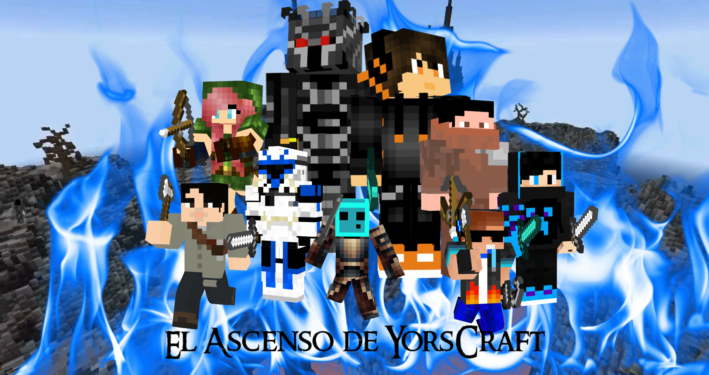

Desde pequeño empecé a tener gustos por el cine, los libros, etc. Estos gustos empezaron gracias a mi padre, que siempre me ponía películas que a el le encantaban como Star Wars, Indiana Jones, Los Goonies, Los Gremlins y series como Doctor Who... En cuanto a mi madre, me enseñó muchas otras películas como El Señor de los Anillos, Jurassic Park, La Momia, etc.
Gracias todo eso de mi infancia a día de hoy ese mundillo me apasiona y me gustaría dedicarme a ello en un futuro.
Tengo muchos gustos, los principales son los siguientes: Me gusta la Natación, antes estaba en un club de Natación pero por temas personales tuve que dejarlo, aunque eso no me paró, porque aun así voy a natación por mi cuenta, lo único malo es que no puedo ir siempre, ya que con Bachillerato me es imposible ir, así que estos últimos años solo puedo ir en Veranos. Por otra parte está en las historias, me encantan los libros, las pelis y las series y actualmente estoy haciendo una trilogía de libros llamada YorsCraft, el primer libro titulado YorsCraf, el segundo titulado la Leyenda de YorsCraft y el tercero titulado el Ascenso de YorsCraft. Con amigos míos hemos hecho los primeros tres libros como una serie de Minecraft y está en desarrollo la 3º temporada que adapta el 3º libro, El Ascenso de YorsCraft.
  Actualmente estudio en 2º de Bachillerato y mi objetivo es ir a la universidad y estudiar la carrera de Historia para hacer oposiciones y ser maestro de historia.

Y esta es la tarea de mi compañero:
Trabajo Jose